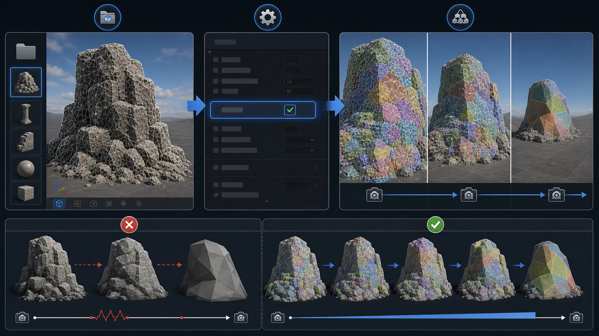
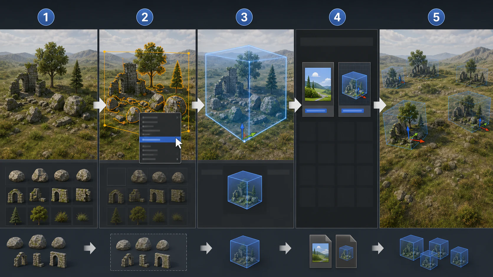
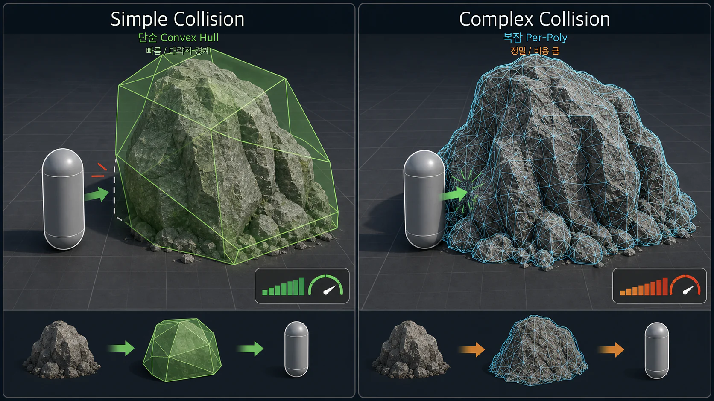

5주차 2교시 — Fab 에셋과 레벨 인스턴스 (학생용)
관련 문서
| 관계 | 문서 |
|---|---|
| 강의 계획서 | 강의계획서: Game Engine II |
| 강의 아웃라인 | 5주차 아웃라인: 환경 라이팅과 에셋 배치 |
| 1교시 핸드아웃 | 5주차 1교시: 환경 라이팅 시스템 |
- Fab에서 3D 에셋을 대량으로 다운로드하고 프로젝트에 정리할 수 있다
- Nanite의 역할과 적용 조건을 이해할 수 있다
- Packed Level Actor로 반복 배치용 에셋 묶음을 만들고 재사용할 수 있다
1. Fab에서 3D 에셋 대량 다운로드
Fab 브라우저에서 검색
Fab은 Epic Games의 통합 마켓플레이스입니다. UE 에디터 안에서 바로 에셋을 검색하고 프로젝트에 추가할 수 있습니다.
1. Content Browser 상단 [Fab] 버튼 클릭
→ Epic Games 계정 로그인 필요
2. 검색바에 "Nordic forest" 입력
3. 좌측 필터: PRODUCT TYPES > [3D Models] 선택Fab 브라우저에서는 검색어와 필터에 따라 결과가 달라질 수 있습니다. 수업에서는
Nordic forest와3D Models필터를 기준으로 진행합니다.
검색 결과에 다양한 3D 에셋이 나타납니다:
- Nordic Forest Cluster Rock Small / Medium / Large
- Nordic Forest Ledge Rock Large
- Nordic Forest Ground Patch Root
- Mossy Rocks, Mossy Mound, Mossy Stump 등
에셋 다운로드
1. 원하는 에셋 클릭 → 상세 페이지
2. 품질: [Medium quality] 선택
High는 용량이 크고 다운로드가 시간이 오래 걸릴 수 있습니다
3. [Add to Project] 클릭
4. 뒤로 가기(←) → 다음 에셋도 같은 방식으로 (총 10개 정도)상세 페이지에서 품질을 선택한 뒤
Add to Project로 현재 프로젝트에 추가합니다.
추천 에셋 목록:
| 에셋 이름 | 용도 |
|---|---|
| Nordic Forest Ledge Rock Large | 레벨 인스턴스 메인 |
| Nordic Forest Cluster Rock Small | 디테일 추가 |
| Nordic Forest Cluster Rock Large | 레벨 인스턴스 메인 |
| Nordic Forest Ground Patch Root | 바닥 디테일 |
| Mossy Rocks | 변형 조합용 |
| Mossy Mound | 변형 조합용 |
| Mossy Stump | 포인트 장식 |
| Nordic Forest Rock Small | 빈 공간 채우기 |
Content Browser 필터링 팁
Content Browser 상단 깔때기 아이콘(필터) 클릭 → [Static Mesh] 체크 → 텍스처, 머테리얼 인스턴스가 숨겨지고 메쉬만 표시됩니다.
Static Mesh 필터를 켜면 메쉬만 남기고 머테리얼/텍스처를 숨길 수 있어 배치할 에셋을 찾기 쉬워집니다.
2. 나나이트(Nanite)
나나이트는 수백만 폴리곤의 메쉬를 자동으로 LOD 관리해주는 시스템입니다.
| 항목 | 설명 |
|---|---|
| 나나이트란 | 수백만 폴리곤의 메쉬를 자동으로 LOD 관리해주는 시스템 |
| LOD와의 관계 | 나나이트가 활성화되면 LOD를 자동 관리합니다. 수동 설정이 불필요합니다 |
| Nanite와 폴리지 | 이번 실습에서는 바위 같은 Static Mesh 중심으로 확인합니다. 폴리지 나나이트는 프로젝트와 버전에 따라 지원 상태를 확인해야 합니다 |
LOD(Level of Detail)란, 카메라에서 멀리 있는 오브젝트의 폴리곤 수를 줄여서 성능을 아끼는 기술입니다. 나나이트는 이를 엔진이 자동으로 처리합니다. 고폴리곤 메쉬를 가져와도 성능 부담을 줄일 수 있습니다.
나나이트 활성화 확인
1. Content Browser에서 바위 Static Mesh 더블클릭
→ 메쉬 에디터가 열립니다
2. Details 패널에서 [Nanite Settings] 섹션 찾기
3. [Enabled] 체크박스 확인
→ 체크가 안 되어 있으면 클릭해서 활성화
4. [Apply Changes] 클릭
Medium으로 받으면 나나이트가 꺼져 있을 수 있습니다. 직접 확인하고 필요하면 켜주세요.
3. 에셋 배치와 정리 워크플로우
에셋 정렬 — 뷰포트에 나열
1. Content Browser에서 Static Mesh 필터를 건 상태로 에셋 전체 선택 (Ctrl+A)
2. 뷰포트의 바닥 위에 드래그 앤 드롭
3. 각 에셋을 이동(W)해서 적당한 간격으로 일렬 나열
→ 어떤 모양인지 한눈에 확인할 수 있도록 정렬합니다
Outliner 폴더링 — Museums
1. Outliner 상단 (+) 또는 우클릭 → [Create Folder]
2. 폴더 이름: "Museums"
3. 배치한 에셋들을 모두 선택 → Museums 폴더로 드래그에셋 확인 및 참조용 전시 공간입니다. 실제 레벨에 사용되는 액터와 구분하기 위해 별도 폴더로 관리합니다.
Actor Hidden In Game 설정
Museums 에셋은 게임 플레이 시 보이지 않아야 합니다.
1. Museums 폴더 안의 에셋 전체 선택
2. Details 검색창에 "hidden in game" 입력
3. [Actor Hidden In Game] 체크
→ 에디터에서는 보이지만 게임 플레이(Play) 시에는 렌더링되지 않습니다
Details 패널 검색창에
hidden in game을 입력하면 해당 체크박스를 빠르게 찾을 수 있습니다.
뷰포트에서 G키를 누르면 게임 뷰로 전환됩니다. Hidden In Game이 체크된 에셋들이 사라지면 정상입니다. 다시 G키를 누르면 에디터 뷰로 돌아옵니다.
G키를 눌렀을 때 Museums 에셋이 보이면? → Hidden In Game 체크가 안 된 것입니다.
4. 레벨 인스턴스 — 배치의 재사용
레벨 인스턴스란?
레벨 인스턴스는 여러 에셋의 배치를 하나의 “패키지”로 묶어서 재사용하는 기능입니다. 원본을 수정하면 모든 복사본에 동시 반영됩니다.
| 항목 | 설명 |
|---|---|
| 정의 | 여러 에셋의 배치를 하나의 “패키지”로 묶어서 재사용 |
| 비유 | 머테리얼 인스턴스와 비슷 — 원본을 기반으로 복제 사용 |
| 핵심 장점 | 원본을 수정하면 모든 복사본에 동시 반영 |
레벨 인스턴스는 배치를 재사용하는 것이고, 블루프린트는 로직을 넣는 것입니다.

레벨 인스턴스 만들기 — 단계별
1단계: 메쉬 선택
Outliner 또는 뷰포트에서 배치한 에셋들을 선택합니다
→ Museums 폴더 안의 에셋이 아닙니다!
→ 뷰포트에 직접 배치한 에셋들을 Ctrl+클릭으로 다중 선택
2단계: Create Packed Level Actor
1. 선택한 메쉬들 위에서 마우스 오른쪽 버튼(RMB) 클릭
2. [Level] 항목 → 서브메뉴 펼침
3. [Create Packed Level Actor] 클릭선택한 메쉬 위에서 우클릭한 뒤
Level > Create Packed Level Actor를 선택합니다.
메뉴에 Create Level Instance도 있지만, Packed Level Actor를 선택하세요.
| 항목 | Create Level Instance | Create Packed Level Actor |
|---|---|---|
| 생성물 | 레벨 파일만 생성 | 레벨 파일 + 블루프린트 생성 |
| 수정 방법 | 뷰포트에서 Edit 모드 직접 수정 | 블루프린트 에디터에서 수정 + Compile |
| 장점 | 가볍고 단순 | 나중에 로직 추가 가능 |
3단계: Pivot 설정
New Packed Level Actor 다이얼로그:
→ [Pivot Type] 드롭다운에서 [Center Min Z] 선택
(피벗이 바닥 중앙에 위치하여 배치 시 편리)
→ 확인 버튼 클릭
Pivot Type은 배치할 때 기준점이 되므로, 이번 실습에서는 바닥 중앙인
Center Min Z를 사용합니다.
4단계: 레벨 저장
Save Level As 다이얼로그:
→ [Content] > [Lectures] > [5Weeks] 폴더 선택
→ 파일 이름: LV_Sample_01 (LV = Level 접두사)
→ [Save]
5단계: 블루프린트(Packed Level Actor) 저장
Save Asset As 다이얼로그:
→ 같은 5Weeks 폴더에 저장
→ 파일 이름: BPP_LV_Sample_01 (BPP = Blueprint Packed 접두사)
→ [Save]
첫 번째는 레벨(LV_), 두 번째는 블루프린트(BPP_)입니다.
6단계: 확인
Content Browser의 5Weeks 폴더를 확인합니다:
| 에셋 | 타입 | 설명 |
|---|---|---|
| BPP_LV_Sample_01 | Blueprint Class | 레벨 인스턴스 블루프린트 (이것을 뷰포트에 배치) |
| LV_Sample_01 | Level | 에셋 배치 정보가 담긴 레벨 |
Hidden In Game 문제 해결
Content Browser에서 BPP를 뷰포트에 배치했는데 게임 뷰(G키)에서 안 보이는 경우가 있습니다. Museums에서 Hidden In Game을 체크한 에셋으로 레벨 인스턴스를 만들었기 때문입니다.
1. Content Browser에서 BPP_LV_Sample_01 더블클릭
→ 블루프린트 에디터가 열립니다
2. 왼쪽 [Components] 패널에서 컴포넌트 전체 선택 (Ctrl+A)
3. Details 검색창에 "hidden in game" 입력
4. [Hidden In Game] 체크 해제
5. 상단 [Compile] 버튼 클릭! (초록색 체크 아이콘)
6. [Save] 클릭Compile 버튼은 블루프린트 에디터 상단 툴바에 있습니다. 초록색 체크 아이콘으로 표시됩니다.
블루프린트에서 설정을 바꾼 뒤에는 Compile을 눌러 변경사항을 적용합니다.
레벨 인스턴스 수정
1. 뷰포트에서 레벨 인스턴스 선택
2. Details 패널 > [Level Instance] 섹션 > [Edit] 클릭
3. Level Instance Edit 모드 진입
→ 내부 오브젝트를 자유롭게 이동/삭제/추가 가능
4. 수정 완료 → 하단 [Save] 클릭| 수정 방법 | 영향 범위 |
|---|---|
| Edit 모드에서 수정 | 같은 BPP를 참조하는 모든 인스턴스에 반영 |
| 개별 인스턴스 이동/회전/스케일 | 해당 인스턴스만 영향 |
변형(Variation) 만들기
에셋 조합을 바꿔서 다른 느낌의 변형을 만들 수 있습니다.
1. Museums에서 다른 에셋 조합을 골라 뷰포트에 배치
2. 선택 → RMB → Level → Create Packed Level Actor
3. 저장: LV_Var01, BPP_LV_Var01
4. BPP 더블클릭 → Hidden In Game 해제 → Compile레벨 인스턴스 배치:
Content Browser에서 BPP 에셋을 뷰포트에 드래그하면 바로 배치됩니다
→ 회전(E)/스케일(R)을 바꿔가며 다양하게 배치
→ Ctrl+D로 복제 가능
→ 같은 BPP를 여러 개 배치하되, 회전/스케일을 다르게 하면 자연스러운 환경 완성
레벨 인스턴스를 수정하고 꼭 눌러야 하는 버튼은? → Compile. 안 누르면 변경사항이 적용되지 않습니다.
5. 콜리전 — 보이는 것과 부딪히는 것
콜리전은 캐릭터와 오브젝트가 실제로 부딪히는 물리 경계입니다. 눈에 보이는 메쉬와 콜리전은 서로 다를 수 있습니다. 콜리전이 없거나 잘못 설정되어 있으면 캐릭터가 바위를 뚫고 지나가거나, 반대로 보이지 않는 벽에 막힐 수 있습니다.

콜리전 확인
1. Content Browser에서 바위 Static Mesh를 더블클릭합니다
2. Static Mesh Editor 상단 메뉴에서 Show > Complex Collision을 켭니다
3. 초록색 와이어프레임이 보이면 콜리전이 있는 상태입니다콜리전 다시 만들기
1. Static Mesh Editor 상단 메뉴에서 Collision > Remove Collision을 선택합니다
2. Collision > Auto Convex Collision을 선택합니다
3. 기본값으로 Apply를 누릅니다
4. Details > Collision > Collision Presets가 BlockAll인지 확인합니다Hull Count를 올리면 콜리전이 더 세밀해지지만 계산 비용도 늘어납니다. 이번 실습에서는 기본값이나 낮은 값으로 충분합니다.
플레이 테스트
- 레벨에 바위를 배치합니다
- Play(Alt+P)를 실행합니다
- 캐릭터가 바위를 뚫고 지나가지 않는지 확인합니다
- 문제가 있으면 해당 Static Mesh의 콜리전과 Collision Presets를 다시 확인합니다
핵심 요약
- Fab 에셋 + Museums 워크플로우: 에셋 다운로드 → 뷰포트 나열 → Outliner 폴더링 → Hidden In Game으로 관리
- 나나이트: 고폴리곤 메쉬의 성능 부담을 줄이고 LOD를 자동 관리. Static Mesh Editor > Nanite Settings > Enabled로 활성화
- 레벨 인스턴스: 배치를 패키지로 묶어 재사용. 수정하면 모든 인스턴스에 반영. 블루프린트 수정 후 Compile 클릭
- 콜리전: 보이는 메쉬와 물리 경계를 구분하고, Static Mesh Editor에서 확인/재생성합니다
핵심 키워드 정리:
→ Fab: Content Browser 상단 [Fab] 버튼 → 검색 → Add to Project
→ 나나이트: Static Mesh Editor > Nanite Settings > Enabled
→ 레벨 인스턴스: RMB > Level > Create Packed Level Actor
→ 이름 규약: LV_ (레벨), BPP_ (블루프린트)
→ Pivot: Center Min Z
→ Compile 클릭
→ 콜리전: Static Mesh Editor > Show > Complex Collision / Collision > Auto Convex Collision
3교시 예고
3교시에는 1교시 라이팅 + 2교시 에셋 배치를 합쳐서 자연환경 씬을 직접 만듭니다.
3교시 실습 순서:
1. 1·2교시 내용을 통합하여 자연환경 씬 직접 제작
2. 레벨 인스턴스 변형 추가 제작
3. 콜리전 직접 실험 — Remove → 뚫림 확인 → Auto Convex 재생성